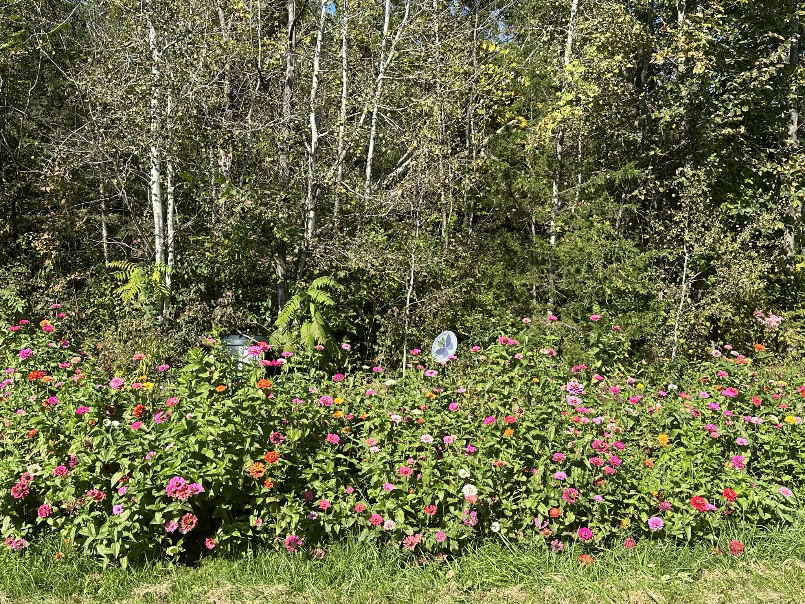
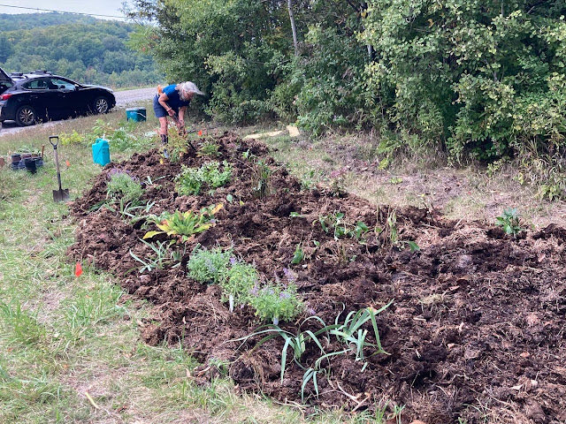

Garden Profile
Guinea Road Garden

This lovely space is privately owned, however accessible to the public. The Guinea road garden is a native plant garden featuring a witch hazel tree, dogwoods, an arrowwood, and large variety of beneficial herbaceous perennials. Planted with a large variety of natives and nectar plants, this install was beloved by bees and butterflies nearly the moment it was placed. The garden is located on a busy corner of Spear st that connects with the very scenic Guinea rd. The Guinea Road garden replaces a spot where folks used to dump unwanted items.
Before
